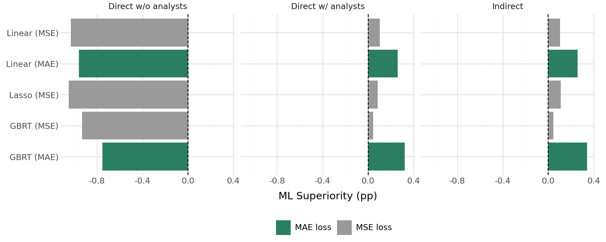

import numpy as np
import pandas as pd
from linearmodels import PanelOLS
df = pd.read_stata("DataShare.dta")
df["fdate"] = df["Forecast_Date"].astype(int)
df["year"] = df["fdate"] // 100
def clustered_mean(y, firm, time):
"""Mean of y with standard errors two-way clustered by firm and time."""
d = pd.DataFrame({"y": y.values, "firm": firm.values, "time": time.values}).dropna()
d = d.set_index(["firm", "time"]).assign(const=1.0)
r = PanelOLS(d["y"], d[["const"]]).fit(
cov_type="clustered", cluster_entity=True, cluster_time=True)
return r.params["const"], r.tstats["const"]
for h, k in [("FQ", 4), ("FY2", 1)]: # k annualises quarterly errors
d = df.dropna(subset=[f"Actual_{h}", f"Pred_{h}", f"Analyst_{h}", "prc"]).copy()
afe = (k * (d[f"Actual_{h}"] - d[f"Analyst_{h}"]) / d["prc"]).clip(-1, 1)
mle = (k * (d[f"Actual_{h}"] - d[f"Pred_{h}"]) / d["prc"]).clip(-1, 1)
d["sup"] = 100 * (afe.abs() - mle.abs())
print(h, "superiority = %.3f (t = %.2f)" % clustered_mean(d["sup"], d["permno"], d["year"]))
d["szq"] = d.groupby("fdate")["size"].transform(
lambda x: pd.qcut(x.rank(method="first"), 5, labels=False))
for q in range(5):
s = d[d["szq"] == q]
print(" size Q%d: %.3f (t = %.2f)" % (q + 1, *clustered_mean(s["sup"], s["permno"], s["year"])))
# Market tests: size-adjusted 3-day announcement returns on SUE^ML and the bias G
e = df.dropna(subset=["Announcement_Ret_Size_Adj_FQ", "Actual_FQ", "Pred_FQ",
"Analyst_FQ", "prc"]).copy()
ann = pd.to_datetime(e["Announcement_Date_Johnson_FQ"])
e["tq"] = (ann.dt.year - 1960) * 4 + (ann.dt.month - 1) // 3
e["afe"] = 4 * (e["Actual_FQ"] - e["Analyst_FQ"]) / e["prc"]
e["mle"] = 4 * (e["Actual_FQ"] - e["Pred_FQ"]) / e["prc"]
for v in ["mle", "afe", "Announcement_Ret_Size_Adj_FQ"]: # trim 1%/99% by quarter
lo = e.groupby("tq")[v].transform(lambda x: x.quantile(0.01))
hi = e.groupby("tq")[v].transform(lambda x: x.quantile(0.99))
e[v + "_t"] = 100 * e[v].where(e[v].between(lo, hi))
e = e.dropna(subset=["mle_t", "afe_t", "Announcement_Ret_Size_Adj_FQ_t"])
e["bias_t"] = e["afe_t"] - e["mle_t"] # = G = 4 (ML - AF) / P
e = e.set_index(["permno", "tq"]).assign(const=1.0)
def erc(xs):
return PanelOLS(e["Announcement_Ret_Size_Adj_FQ_t"], e[xs + ["const"]]).fit(
cov_type="clustered", cluster_entity=True, cluster_time=True)
b = erc(["mle_t", "bias_t"]).params
g = erc(["afe_t", "bias_t"]).params
print("w_AF / (w_AF + w_ML) = %.3f" % (b["bias_t"] / b["mle_t"]))
print("w_AF / w_ML = %.3f" % (-b["bias_t"] / g["bias_t"]))32 Machine Learning Earnings Forecasts and Market Expectations
Every earnings-based design in this part of the book needs an expected earnings number. The earnings surprise of Chapter 31 subtracts it from reported earnings, implied cost of capital inverts a valuation model around it, and forward P/E divides price by it. For four decades the default proxy has been the analyst consensus, because analysts beat time-series models (Bradshaw et al. 2012) and because the market appears to react to deviations from consensus (Kothari 2001; Livnat and Mendenhall 2006). Machine learning has unsettled that default. A string of recent papers reports that statistical models can produce earnings forecasts more accurate than analysts’ forecasts (Ball and Ghysels 2018; Binsbergen, Han, and Lopez-Lira 2023; Cao and You 2024; Silva and Thesmar 2024), which suggests that researchers should replace the consensus with a machine forecast.
Campbell et al. (2026) ask the obvious follow-up questions that the earlier papers mostly skipped. Which machine forecast? Their answer is that the claim “machines beat analysts” depends on modelling choices that most papers make without discussion: 79% of the 3,024 machine-learning models they estimate are less accurate than the analyst consensus. They then ask why the good models win, and find that they win by correcting predictable errors in analysts’ forecasts, not by finding new information. Finally, they ask which forecast the market uses. Stock prices behave as if investors correct most, but not all, of the predictable analyst error, and the uncorrected part shows up in returns for up to nine months after the announcement.
This chapter lays the paper out in full and then reproduces it in three ways:
- Section 32.2 walks through the design (the 3,024-model experiment, the accuracy measure, the indirect forecasting approach, and the market-expectations test) and its results.
- Section 32.3 re-computes the paper’s headline numbers from the authors’ public replication data with independent code.
- Section 32.4 builds a simulation in which the true analyst bias, the true market expectation, and the true information sets are known, and shows each mechanism the paper documents: why loss function, analyst inputs, the indirect approach, and the cross-validation scheme matter, why the machine’s advantage concentrates in small firms and long horizons, and what the market-expectations regression does and does not identify.
Section 32.6 then turns the paper into a research design for Vietnam, where analyst coverage is thin and the question “should I use the consensus or a model?” arises for almost every firm.
Sources used in this chapter
The paper is Campbell et al. (2026), Management Science 72(10), 8863–8887. The full text of the published version sits behind a bot check, so the method details below come from two open sources: (i) the authors’ replication package on Mendeley Data (DOI 10.17632/2pg764w6gs.1, CC BY 4.0), whose table files match the published tables, and (ii) the April 2024 working-paper version, which is Chapter 2 of Harrison Ham’s University of Georgia dissertation. Numbers quoted from the package are the published numbers. Where a number exists only in the working paper (the horizon table, the implied-cost-of-capital test, and the analyst-value-added analysis), the text says so, because some magnitudes changed between versions.
32.1 The Question and Why It Matters
An earnings expectation can serve two different purposes, and the paper’s title is a reminder that the two need not coincide.
- A statistical forecast. Which number minimises the ex post forecast error? This is what matters for valuation inputs such as forward earnings and implied cost of capital (Frankel and Lee 1998; Hou, Dijk, and Zhang 2012).
- A proxy for the market’s belief. Which number do prices reflect? This is what matters for earnings-surprise and earnings-response designs, where the researcher wants \(\text{SUE}\) to measure news to investors.
If investors were fully rational and had access to the best statistical model, the two would coincide. If investors share analysts’ biases (Bordalo et al. 2019) or simply overweight the consensus (So 2013), the most accurate forecast and the market’s expectation diverge, and the right choice depends on the research question. Campbell et al. (2026) quantify both sides with the same set of forecasts.
32.2 The Paper in Detail
32.2.1 Data and Forecast Targets
The sample is the CRSP–Compustat–I/B/E/S intersection. Analysts’ forecasts are the I/B/E/S median consensus, which I/B/E/S computes on the third Thursday of each month. Two targets are forecast every month:
- FQ: the next quarterly EPS (I/B/E/S horizon Q1, or Q2 if Q1 has already been announced before month end). Data from January 1985.
- FY2: two-year-ahead annual EPS. Data from January 1983, as in Bradshaw et al. (2012).
Both end in December 2020, and out-of-sample evaluation runs from June 1990. The predictor set has 77 features: the WRDS Financial Ratio Suite, five CRSP variables (price, monthly return, six-month momentum, industry momentum, log market capitalisation), and five analyst variables:
| Variable | Definition |
|---|---|
medestqtr, medest2 |
Current consensus forecast for FQ / FY2 |
rev_FYqtr_3m, rev_FY2_3m |
Three-month revision of the consensus |
ibes_earnings_qtr, ibes_earnings_ann |
Most recently realised quarterly / annual EPS |
last_Fqtrana_fe_med, last_F2ana_fe_med |
Most recently realised analyst forecast error at a comparable distance to the period end |
distqtr, dist2 |
Months between the forecast date and the fiscal period end |
Predictors are winsorised monthly at 1% and 99%, missing values are filled with the Fama–French 38-industry median and then the cross-sectional median, and features are standardised with training-window means and standard deviations. Firm-months with price at or below $1 are dropped. The final datasets hold about 1.26 million (FQ) and 1.35 million (FY2) firm-months, roughly 2,300–2,400 firms per month.
The timeline is the part most often gotten wrong in this literature. At the end of month \(t\), the training set contains only observations whose target earnings were announced in months \(t-119\) to \(t\) (rolling) or up to \(t\) (expanding). The test set is month \(t\)’s cross-section, for earnings announced after \(t\). A firm whose earnings are announced in \(t+1\) is therefore in the test set at \(t\) and not in the training set, even if its fiscal period ended earlier. It is the forecasting analogue of the point-in-time rules used throughout the book: a feature or target enters only once it was public.
32.2.2 The Accuracy Measure: ML Superiority
Following Bradshaw et al. (2012), accuracy is measured relative to analysts on a per-dollar-of-price basis. For firm \(i\), forecast month \(t\), and fiscal period ending \(T\),
\[ \text{ML Superiority}_{i,t} = \left|\frac{\text{EPS}_{i,T} - \text{AF}_{t}(\text{EPS}_{i,T})}{P_{i,t}}\right| - \left|\frac{\text{EPS}_{i,T} - \text{ML}_{t}(\text{EPS}_{i,T})}{P_{i,t}}\right|, \tag{32.1}\]
where both price-scaled errors are winsorised to \([-1, 1]\), FQ errors are annualised (multiplied by four), and the result is reported in percentage points. A positive value means the machine’s absolute error is smaller than the analysts’. A model’s ML Superiority is the panel average, with standard errors two-way clustered by firm and year.
The measure has an economic reading: 0.10 percentage points is a reduction in the absolute forecast error of 1 cent for a $10 stock. For scale, the median \(|\text{EPS}/P|\) in the sample is 6.07% (FQ, annualised) and 6.43% (FY2). The paper uses 1 cent per $10 of price as its threshold for an economically meaningful improvement, motivated by evidence that investors discount earnings beats smaller than a cent (Keung, Lin, and Shih 2010).
Because Equation 32.1 is an absolute-error comparison, the forecast that maximises it is the conditional median of earnings, not the conditional mean. This one fact explains the single largest result in the paper.
32.2.3 Direct and Indirect Forecasts
A machine can use analysts’ forecasts in three ways:
- Direct without analysts. Regress \(\text{EPS}_{i,T}\) on non-analyst features: \(\widehat{\text{EPS}} = \hat f(X)\).
- Direct with analysts. Add the analyst variables to \(X\): \(\widehat{\text{EPS}} = \hat f(X, \text{AF}, \dots)\).
- Indirect (Frankel and Lee 1998; So 2013). Forecast the analyst error and correct the consensus: \[ \widehat{\text{EPS}}_{i,T} = \text{AF}_{t} + \hat g(X, \text{AF}, \dots), \qquad \hat g = \arg\min_g \sum L\big(\text{EPS}_{i,T} - \text{AF}_{t},\; g(\cdot)\big). \tag{32.2}\]
For an unpenalised linear model with \(\text{AF}\) among the regressors, the direct-with-analysts and indirect forecasts are identical: subtracting \(\text{AF}\) from the target only shifts its coefficient by one. The two approaches differ for every model that shrinks or approximates. A ridge or lasso penalty shrinks coefficients toward zero, so the direct model is shrunk toward “ignore the analyst” while the indirect model is shrunk toward “trust the analyst”. A tree ensemble has to rebuild the near-identity map from \(\text{AF}\) to \(\text{EPS}\) out of piecewise-constant steps in the direct approach, while in the indirect approach the identity is free and every split is spent on the bias. Since the consensus is an excellent forecast to begin with, “trust the analyst unless the data say otherwise” is the better default. Section 32.4.1 verifies both statements.
32.2.4 The 3,024-Model Experiment
Every model minimises an average loss plus a penalty over the estimation window,
\[ \hat f = \arg\min_{f}\; \frac{1}{N}\sum_{i} L\big(y_i, f(X_i)\big) + G(f;\gamma), \]
and the paper varies nine choices that existing studies make differently:
| Choice set | Options |
|---|---|
| Loss function \(L\) | MAE; MSE; MSE with the target trimmed at 1%/99% in the training set |
| Algorithm (\(G\)) | OLS, Lasso, Ridge, Elastic Net, random forest (RF), gradient-boosted regression trees (GBRT) |
| Cross-validation for hyperparameters | Time-series (validation after training); panel 5-fold |
| Estimation window | Rolling 10 years; expanding |
| Hyperparameter tuning frequency | Once at the beginning; annually |
| Model refit frequency | Monthly; yearly |
| Forecasting approach | Direct; indirect (Equation 32.2) |
| Predictor set | With analyst variables; without |
| Scaling in the forecasting step | None; EPS variables divided by price |
| Forecast period | FQ; FY2 |
The authors report that estimating all 3,024 models took about five years of machine time on university servers.
32.2.5 Result 1: Most Machine Forecasts Lose to Analysts
Of the 3,024 models, 79% have negative ML Superiority (88% for FQ and 70% for FY2). The distribution has a long left tail reaching below \(-15\) percentage points and a narrow right tail that never exceeds \(+0.65\). Table 32.3, reproduced from the replication package, averages ML Superiority over all models sharing a given option and reports the best and worst option in each choice set.
Specification_Comparison.tex in the replication package.
| Choice set | Best option | Worst option | Superiority (best) | Superiority (worst) | Difference | Run time diff. (hours) |
|---|---|---|---|---|---|---|
| Loss function | MAE | MSE | \(-0.37\) | \(-6.69\) | 6.32 | 14.9 |
| Algorithm | RF | OLS | \(-1.22\) | \(-4.58\) | 3.36 | 15.4 |
| Forecasting approach | Indirect | Direct | \(-1.51\) | \(-3.05\) | 1.55 | \(-0.5\) |
| CV scheme | Time-series | K-fold | \(-1.70\) | \(-3.17\) | 1.47 | \(-4.6\) |
| Predictor set | With analysts | Without | \(-2.11\) | \(-3.39\) | 1.28 | 0.0 |
| Scaling | Price | None | \(-2.30\) | \(-2.78\) | 0.48 | \(-0.7\) |
| Estimation window | Rolling | Expanding | \(-2.40\) | \(-2.67\) | 0.27 | \(-7.7\) |
| Refit frequency | Monthly | Yearly | \(-2.49\) | \(-2.59\) | 0.10 | 4.4 |
| Tuning frequency | Annual | Beginning | \(-2.39\) | \(-2.48\) | 0.09 | 21.2 |
Four choices dominate:
- The loss function. None of the 1,008 MSE models beats analysts; 46% of the MAE models do. Earnings scaled by price have fat tails and a long left tail from losses and write-offs, so the conditional mean sits below the conditional median. An MSE model chases the mean and is penalised by an absolute-error yardstick; trimming the target helps (16% of trimmed-MSE models win) but does not fix the misalignment.
- The indirect approach raises the share of winning models from 12% (direct) to 39%.
- Time-series cross-validation beats 5-fold cross-validation. With overlapping targets (the same FY2 EPS is the target for up to 24 monthly forecasts of the same firm), a shuffled \(k\)-fold split puts near-duplicates of each validation row in the training folds, the validation error is too optimistic, and tuning picks models that are too flexible. This is the concern Bertomeu (2020) raises for accounting data.
- Analyst inputs. Only 4% of the models without analyst variables beat analysts.
Restricting attention to MAE loss, the indirect approach, and time-series CV leaves 176 models, all of which beat analysts. The remaining choices (window, refit and tuning frequency) change accuracy by a tenth of a percentage point or less but change run time by up to 21 hours, so the cheap options are fine.
32.2.6 Result 2: The Best Model, and Where Its Edge Comes From
Best_SpecsFQ.tex, Best_SpecsFY2.tex, whose header swaps the labels of the refit and tuning-frequency columns.
| Algorithm | FQ superiority | FY2 superiority |
|---|---|---|
| OLS | 0.113 | 0.267 |
| Lasso | 0.113 | 0.300 |
| Ridge | 0.113 | 0.306 |
| Elastic net | 0.113 | 0.309 |
| Random forest | 0.116 | 0.365 |
| GBRT | 0.201 | 0.601 |
GBRT wins for both horizons (Table 32.4). Table 32.5 isolates the role of analysts by holding the best specification fixed and changing only how analyst information enters.
BradshawT3FullBestnoana.tex.
| Approach | OLS | Lasso | Ridge | EN | RF | GBRT |
|---|---|---|---|---|---|---|
| FQ, direct without analysts | \(-1.722\) | \(-1.721\) | \(-1.724\) | \(-1.731\) | \(-2.629\) | \(-1.132\) |
| FY2, direct without analysts | \(-0.460\) | \(-0.434\) | \(-0.461\) | \(-0.420\) | \(-0.558\) | \(0.205\) |
| FQ, direct with analysts | \(-0.113\) | \(-0.117\) | \(-0.120\) | \(-0.113\) | \(-2.369\) | \(0.092\) |
| FY2, direct with analysts | \(0.167\) | \(0.165\) | \(0.168\) | \(0.168\) | \(-0.452\) | \(0.536\) |
| FQ, indirect | \(0.113\) | \(0.113\) | \(0.113\) | \(0.113\) | \(0.116\) | \(0.201\) |
| FY2, indirect | \(0.267\) | \(0.300\) | \(0.306\) | \(0.309\) | \(0.365\) | \(0.601\) |
Three lessons follow. Without analyst information, no model beats analysts for FQ, and only GBRT does so for FY2, by 0.2 points (2 cents per $10 stock). With analyst variables as inputs, the direct approach helps but random forests still lose badly, because averaging tree leaves cannot reproduce the near-linear map from forecast to outcome. The indirect approach makes every algorithm beat analysts and compresses the gap between the worst and best algorithm. In short, the machine’s edge is a correction to the analyst, not a substitute for the analyst.
What does the correction look like? The paper decomposes the GBRT predicted bias with SHAP values. For FQ the most important features are the lagged realised analyst error (14.0% of total mean absolute SHAP), price (7.3%), the consensus itself (6.5%), size (4.7%), and the one-month return (4.5%). For FY2 they are the consensus (24.1%), price (14.0%), the three-month analyst revision (6.4%), six-month momentum (5.1%), and free cash flow over operating cash flow (5.0%). The ten most important features account for half (FQ) and two-thirds (FY2) of the total. The SHAP profile of the lagged analyst error is S-shaped: steeper than the linear coefficient near zero and flattening in the tails. Analysts’ errors are persistent (they under-correct their own past mistakes), and the machine learns the persistence nonlinearly. Price and the level of the forecast enter because analyst errors vary systematically with both, in line with the conditional biases documented by Binsbergen, Han, and Lopez-Lira (2023) and with the characteristics-based forecasts of analyst errors in So (2013).
32.2.7 Result 3: When the Machine’s Edge Is Economically Large
The average superiority of 0.20 points (FQ) and 0.60 points (FY2) hides large cross-sectional differences.
Firm size. Sorting monthly on market capitalisation:
| Size quintile | Q1 (small) | Q2 | Q3 | Q4 | Q5 (large) |
|---|---|---|---|---|---|
| FQ | 0.569 | 0.194 | 0.106 | 0.072 | 0.062 |
| FY2 | 1.712 | 0.677 | 0.362 | 0.189 | 0.064 |
For the largest quintile, which holds about 87% of market capitalisation, the gain is about 0.6 cents per $10 stock: real but economically trivial. For the smallest quintile it is 5.7 cents (FQ) and 17 cents (FY2). A multivariate Fama–MacBeth regression of superiority on percentile ranks of firm attributes (Newey–West, 24 lags) confirms that small size, high idiosyncratic volatility, many business segments, wide bid–ask spreads, and (for FY2) external financing and accrual volatility are associated with a larger machine edge. These are the information-uncertainty and analyst-incentive variables of the analyst-bias literature.
Horizon. In the working-paper version, GBRT’s superiority for FQ forecasts made one month before the announcement is only 0.086 points, rising to 0.27 at three months; for FY2 it is 0.52 at twelve months and peaks at 0.67 at nineteen months. Analysts are hard to beat on the next quarter.
Time. The 10-year rolling average of the FQ superiority falls from about 0.31 points in 2000 to about 0.10 by 2020 (the decade averages in our recomputation are 0.30, 0.19 and 0.10 for FQ and 0.84, 0.59 and 0.33 for FY2), but it stays significantly positive. Analysts appear to have removed part of their own predictable error over time, which is what one would expect if they adopt the same tools.
Thin coverage. For the two smallest size quintiles, with one to three analysts, a GBRT model that does not use analyst inputs is significantly worse than analysts for forecasts made one or two months before the announcement (up to six months when there are three analysts), and significantly better only from eight months ahead (smallest firms, a single analyst) or, in most cells, ten months ahead (package table Superiority_low_coverage.tex). Even one or two analysts carry information a machine cannot reconstruct from financial statements, until the forecast horizon is long.
These are the “when not to” conditions in the title. For large firms and short horizons, the consensus is about as good as the best machine, costs nothing to compute, and is reproducible. For small firms and long horizons the machine is materially better.
32.2.8 Result 4: Which Expectation Does the Market Use?
The market test regresses size-adjusted three-day announcement returns on earnings surprises built from each expectation. With \(\text{SUE}^{X} = (\text{EPS} - X_{t-1})/P_{t-1}\) for \(X \in \{\text{AF}, \text{ML}\}\), measured at the month end before the announcement,
\[ R_{d-1,d+1} = c + \beta\,\text{SUE} + \varepsilon . \]
Across the 1,512 FQ models, the rank correlation between a model’s ML Superiority and the earnings-response coefficient of its SUE is 0.97, and 90% of the models produce a smaller ERC than the analyst-based SUE. More accurate forecasts produce surprises that look more like news to the market, so a poorly specified machine forecast is a worse proxy for the market’s expectation than the consensus.
To estimate how much weight the market puts on each forecast, suppose the market’s surprise is a weighted combination \[ \text{SUE}^{M} = w_{AF}\,\text{SUE}^{AF} + w_{ML}\,\text{SUE}^{ML}, \qquad R = c + \beta^{M}\,\text{SUE}^{M} + \varepsilon . \tag{32.3}\] Write \(G = (\text{ML} - \text{AF})/P\), so that \(\text{SUE}^{AF} = \text{SUE}^{ML} + G\). Substituting, \[ R = c + \underbrace{\beta^{M}(w_{AF}+w_{ML})}_{\beta_1}\,\text{SUE}^{ML} + \underbrace{\beta^{M} w_{AF}}_{\beta_2}\, G + \varepsilon , \qquad R = c + \underbrace{\beta^{M}(w_{AF}+w_{ML})}_{\gamma_1}\,\text{SUE}^{AF} \underbrace{- \beta^{M} w_{ML}}_{\gamma_2}\, G + \varepsilon , \tag{32.4}\] so that \[ \frac{\beta_2}{\beta_1} = \frac{w_{AF}}{w_{AF}+w_{ML}}, \qquad -\frac{\beta_2}{\gamma_2} = \frac{w_{AF}}{w_{ML}} . \tag{32.5}\] If prices fully undo the predictable analyst error, \(\beta_2 = 0\). If the market simply uses the consensus, \(\beta_2 = \beta_1\). The gap \(G\) is the machine-predicted analyst bias, so the regression asks whether the market reacts to the part of the analyst surprise that was predictable in advance.
| (1) | (2) | (3) | (4) | (5) | |
|---|---|---|---|---|---|
| \(\text{SUE}^{ML}\) | 0.241 (5.89) | 0.245 (5.62) | 0.181 (5.77) | 0.180 (9.44) | |
| \(\text{SUE}^{AF}\) | 0.209 (5.91) | ||||
| Bias \(G\) | 0.093 (5.36) | 0.087 (5.22) | 0.099 (4.83) | ||
| \(\text{SUE}^{ML}\times\) Size rank | 0.232 (3.60) | ||||
| \(G\times\) Size rank | \(-0.086\) (\(-2.19\)) | ||||
| \(\text{SUE}^{ML}\times\) IO rank | 0.172 (2.00) | ||||
| \(G\times\) IO rank | \(-0.071\) (\(-1.54\)) | ||||
| \(R^2\) (%) | 2.33 | 2.20 | 2.45 | 2.67 | 2.72 |
| Observations | 326,886 | 326,886 | 326,886 | 326,886 | 325,648 |
Column (3) gives \(\beta_2/\beta_1 = 0.093/0.245 = 0.38\): in the average stock the market behaves as if it puts 38% relative weight on the consensus and 62% on the machine forecast. The market “largely, but not fully” corrects the predictable analyst bias. The interactions show where the correction is incomplete. Evaluating Equation 32.5 at the bottom and top size ranks, the analyst weight is \(0.087/0.181 \approx 0.48\) for the smallest stocks and \((0.087-0.086)/(0.181+0.232) \approx 0\) for the largest. For institutional ownership it is \(0.099/0.180 \approx 0.55\) at the bottom rank and \((0.099-0.071)/(0.180+0.172) \approx 0.08\) at the top. Large, institutionally held stocks are priced as if the analyst bias were already removed. Small stocks held by retail investors are priced as if about half of it were taken at face value.
The bias is a return predictor. If part of the predictable bias is not priced before the announcement, sorting stocks on \(G\) should predict returns. The paper forms quintiles on \(G\) each quarter and tracks the cumulative size-adjusted return of the high-minus-low portfolio from 40 trading days before to 252 days after the announcement. For small, low-IO stocks the spread is about 4.7% by the announcement day and keeps rising to about 10% by roughly 170 trading days (eight to nine months) before levelling off. For small, high-IO stocks it reaches about 7%. For large stocks it is 1–3% and mostly insignificant. Prices eventually catch up with the machine forecast, but slowly, and only where the bias is large and sophisticated investors are scarce.
Additional working-paper results. The working paper also shows that implied cost of capital computed from machine FY2 forecasts tracks cross-sectional expected returns better than ICC from analysts’ forecasts and better than the characteristic-based measure of Lee, So, and Wang (2021), with the gain concentrated in small firms. It also defines an “analyst value added” (the accuracy gain from adding analyst inputs to the machine), which is larger for small firms and for firms with complex filings and does not decline over time.
32.3 Replication from the Authors’ Data
The replication package contains the monthly GBRT-indirect forecasts (DataShare.dta, 279 MB, 1.16 million firm-months) together with realised EPS, the consensus, price, size, institutional ownership, the firm attributes, and size-adjusted three-day announcement returns. It also includes a summary of all 3,024 models (Specification_Sumstats.csv). The model training code is not included, so the replicable part is everything downstream of the forecasts: the accuracy measure, the size sorts, the time trend and the market tests. The cell below is our own implementation. It is not evaluated when the book is built because the data file is not distributed with the book. Download the package from the DOI above to run it.
Running this code on the package data (October 2026, about one minute) reproduces the published numbers:
vcemway and in linearmodels.
| Statistic | Published | Recomputed |
|---|---|---|
| FQ ML Superiority, GBRT indirect | 0.201 (\(t\) = 8.71) | 0.201 (\(t\) = 8.85) |
| FY2 ML Superiority, GBRT indirect | 0.601 (\(t\) = 7.48) | 0.601 (\(t\) = 7.60) |
| FQ superiority, size Q1 / Q5 | 0.57 / 0.06 (figure) | 0.569 / 0.062 |
| FY2 superiority, size Q1 / Q5 | 1.71 / 0.06 (figure) | 1.712 / 0.064 |
| ERC on \(\text{SUE}^{ML}\), col. (1) | 0.241 (5.89) | 0.241 (5.89) |
| ERC on \(\text{SUE}^{AF}\), col. (2) | 0.209 (5.91) | 0.209 (5.91) |
| \(\beta_1\), \(\beta_2\), col. (3) | 0.245, 0.093 | 0.245, 0.093 |
| \(w_{AF}/(w_{AF}+w_{ML})\) | — | 0.381 |
| \(w_{AF}/w_{ML}\) | — | 0.614 |
| Share of 3,024 models with superiority \(\le 0\) | “80%” | 79.1% |
Two additional facts from the package are worth recording. The mean analyst error \((\text{EPS} - \text{AF})/P\) is \(-1.4\%\) (FQ, annualised) and \(-2.8\%\) (FY2), the familiar optimism that rises with horizon. The two weights in Equation 32.5 are also internally consistent: \(0.381/(1-0.381) = 0.615 \approx 0.614\).
One further calculation is ours, not the paper’s, and is motivated by Section 32.4.4 below. Regressing the trimmed realised analyst error \(4(\text{EPS}-\text{AF})/P\) on the trimmed bias \(G\) in the same ERC sample gives a slope of \(\hat\lambda = 0.87\) (two-way clustered \(t\) = 12.8), so the machine’s bias estimate is somewhat too dispersed. Under the assumptions of Equation 32.6, the market’s weight on the consensus relative to the rational forecast is then about \(1 - (1 - 0.38)/0.87 \approx 0.28\) rather than 0.38. Investors appear to correct even more of the predictable analyst error than the headline estimate suggests.
32.4 A Simulation That Shows Each Mechanism
The replication confirms the numbers, but it cannot show why they come out this way, because nobody knows the true analyst bias or the true market expectation in real data. In a simulation we do know them. The design below builds the paper’s key ingredients into a firm-year panel and then checks whether the paper’s procedures recover them:
- Earnings yields have a firm-specific level, persistent fundamentals with nonlinear effects, fat-tailed noise that is larger for small firms, and occasional large write-offs that skew the distribution to the left.
- Analysts know something the machine does not: a private signal about part of the earnings shock, more precise at shorter horizons.
- Analysts also make predictable errors: they are optimistic about small and low-priced firms (more so at longer horizons) and only partly correct their past errors, through an S-shaped function of the lagged error, mirroring the SHAP profile in Section 32.2.6.
- Each announcement is forecast three times (12, 6 and 1 month ahead), so targets overlap across rows, as with I/B/E/S monthly forecasts.
import time
import warnings
import numpy as np
import pandas as pd
import statsmodels.api as sm
from sklearn.ensemble import HistGradientBoostingRegressor
from sklearn.linear_model import Lasso
from sklearn.model_selection import KFold
from sklearn.preprocessing import StandardScaler
from plotnine import (ggplot, aes, geom_col, geom_hline, coord_flip, facet_wrap,
labs, theme_minimal, theme, scale_fill_manual)
warnings.filterwarnings("ignore")
mlef_t0 = time.time()
rng = np.random.default_rng(2026)
N_FIRMS, N_YEARS = 500, 15
HORIZONS = {12: 0.3, 6: 0.6, 1: 0.9} # months ahead -> share of eta analysts know
size = rng.normal(0, 1, N_FIRMS) # persistent log-size (z-score)
level = rng.normal(0.06, 0.03, N_FIRMS) # firm-specific earnings-yield level
x = rng.normal(0, 1, (N_FIRMS, 3)) # persistent fundamentals
lag_err = np.zeros(N_FIRMS) # last realised analyst error (scaled)
lag_eps = level.copy()
frames = []
for yr in range(N_YEARS):
size = 0.95 * size + rng.normal(0, 0.3, N_FIRMS)
x = 0.8 * x + rng.normal(0, 0.6, x.shape)
price = np.exp(2.5 + 0.6 * size + rng.normal(0, 0.4, N_FIRMS))
mu = (level + 0.012 * x[:, 0] - 0.008 * np.maximum(x[:, 1], 0)
+ 0.006 * np.tanh(2 * x[:, 2])) # fundamental earnings yield
vol = 0.02 * np.exp(-0.5 * size) # small firms are noisier
eta = 0.7 * vol * rng.standard_t(4, N_FIRMS) # shock analysts partly learn
u = 0.7 * vol * rng.standard_t(4, N_FIRMS) # shock nobody can forecast
writeoff = -1.0 * (rng.random(N_FIRMS) < 0.06) * rng.exponential(0.15, N_FIRMS)
eps = mu + eta + u + writeoff # realised EPS / price
for h, info in HORIZONS.items():
bias = (0.004 * h / 12 * (1 + np.exp(-size)) # optimism: small firms, long horizon
+ 0.010 * (price < 8) # optimism: low-priced stocks
- 0.010 * np.tanh(lag_err / 0.02)) # sticky, S-shaped in past errors
af = mu + info * eta + bias + rng.normal(0, 0.003, N_FIRMS)
frames.append(pd.DataFrame({
"firm": np.arange(N_FIRMS), "year": yr, "horizon": h,
"size": size, "price": price, "x0": x[:, 0], "x1": x[:, 1], "x2": x[:, 2],
"lag_eps": lag_eps, "lag_err": lag_err, "af": af, "eps": eps,
# conditional median given analysts' information (write-off median is 0)
"rational": mu + info * eta,
}))
lag_err = eps - af # 1-month-ahead error is next year's lag
lag_eps = eps
panel = pd.concat(frames, ignore_index=True)
afe = panel["eps"] - panel["af"]
print(f"{len(panel):,} firm-horizon-years; mean analyst error {100 * afe.mean():.2f}% of price, "
f"median {100 * afe.median():.2f}%")
print("mean analyst error by horizon (% of price):",
(100 * afe.groupby(panel["horizon"]).mean()).round(2).to_dict())22,500 firm-horizon-years; mean analyst error -1.98% of price, median -0.85%
mean analyst error by horizon (% of price): {1: -1.48, 6: -1.95, 12: -2.51}All variables are already scaled by price, so “EPS” in the code means the earnings yield and the superiority measure of Equation 32.1 needs no further scaling. The mean analyst error is negative (optimism) and grows with the horizon, as in I/B/E/S. The mean is more negative than the median because write-offs pull the mean down.
32.4.1 The Specification Grid
We estimate fifteen models: three ways of using analysts (Section 32.2.3) crossed with five algorithm–loss pairs. The linear MAE model is least-absolute-deviation regression, the lasso uses MSE with a fixed penalty on standardised features, and GBRT is scikit-learn’s histogram gradient boosting with either loss. Training uses an expanding window and refits every three years, the cheap options that Table 32.3 says cost little accuracy.
BASE = ["size", "price", "x0", "x1", "x2", "lag_eps", "horizon"]
ANALYST = ["af", "lag_err"]
APPROACHES = ["Direct w/o analysts", "Direct w/ analysts", "Indirect"]
MODELS = [("Linear", "MSE"), ("Linear", "MAE"), ("Lasso", "MSE"),
("GBRT", "MSE"), ("GBRT", "MAE")]
def gbrt(loss, **kw):
params = dict(max_iter=200, learning_rate=0.05, max_leaf_nodes=15,
min_samples_leaf=50, random_state=0)
params.update(kw)
return HistGradientBoostingRegressor(
loss="squared_error" if loss == "MSE" else "absolute_error", **params)
def fit_predict(train, test, approach, algo, loss):
"""Out-of-sample EPS/P forecast for one specification."""
feats = BASE + ([] if approach == "Direct w/o analysts" else ANALYST)
y = train["eps"] - train["af"] if approach == "Indirect" else train["eps"]
if algo == "Linear":
X = sm.add_constant(train[feats].to_numpy())
Xt = sm.add_constant(test[feats].to_numpy(), has_constant="add")
if loss == "MSE":
beta = np.linalg.lstsq(X, y.to_numpy(), rcond=None)[0]
else:
beta = sm.QuantReg(y.to_numpy(), X).fit(q=0.5, max_iter=2000).params
pred = Xt @ beta
elif algo == "Lasso":
sc = StandardScaler().fit(train[feats])
pred = Lasso(alpha=0.002).fit(sc.transform(train[feats]), y).predict(
sc.transform(test[feats]))
else:
pred = gbrt(loss).fit(train[feats], y).predict(test[feats])
return pred + (test["af"].to_numpy() if approach == "Indirect" else 0.0)
def superiority(eps, af, ml):
"""ML Superiority in percentage points, errors winsorised to [-1, 1]."""
return 100 * ((eps - af).clip(-1, 1).abs() - (eps - ml).clip(-1, 1).abs())
FIRST_TEST, REFIT_EVERY = 6, 3
specs = [(a, g, l) for a in APPROACHES for g, l in MODELS]
oos = panel[panel["year"] >= FIRST_TEST].copy()
pieces = {s: [] for s in specs}
for start in range(FIRST_TEST, N_YEARS, REFIT_EVERY):
train = panel[panel["year"] < start]
test = panel[(panel["year"] >= start) & (panel["year"] < start + REFIT_EVERY)]
for s in specs:
pieces[s].append(fit_predict(train, test, *s))
rows = []
for s in specs:
col = " | ".join(s)
oos[col] = np.concatenate(pieces[s])
sup = superiority(oos["eps"], oos["af"], oos[col])
rows.append({"approach": s[0], "model": f"{s[1]} ({s[2]})",
"superiority": sup.mean(), "se": sup.std() / np.sqrt(len(sup))})
grid = pd.DataFrame(rows)
print(grid.pivot(index="model", columns="approach", values="superiority")
.loc[[f"{g} ({l})" for g, l in MODELS], APPROACHES].round(3).to_string())
same = np.allclose(oos["Direct w/ analysts | Linear | MSE"], oos["Indirect | Linear | MSE"])
print(f"\nOLS direct-with-analysts identical to OLS indirect: {same}")approach Direct w/o analysts Direct w/ analysts Indirect
model
Linear (MSE) -1.032 0.104 0.104
Linear (MAE) -0.959 0.260 0.260
Lasso (MSE) -1.050 0.085 0.111
GBRT (MSE) -0.933 0.046 0.044
GBRT (MAE) -0.752 0.323 0.343
OLS direct-with-analysts identical to OLS indirect: Trueplot_df = grid.assign(
approach=pd.Categorical(grid["approach"], APPROACHES),
model=pd.Categorical(grid["model"], [f"{g} ({l})" for g, l in MODELS][::-1]),
loss=np.where(grid["model"].str.contains("MAE"), "MAE loss", "MSE loss"))
(ggplot(plot_df, aes("model", "superiority", fill="loss"))
+ geom_col()
+ geom_hline(yintercept=0, linetype="dashed")
+ coord_flip()
+ facet_wrap("~approach", ncol=3)
+ scale_fill_manual(values=["#2a7f62", "#9a9a9a"])
+ labs(x="", y="ML Superiority (pp)", fill="")
+ theme_minimal()
+ theme(figure_size=(9, 3.6), legend_position="bottom"))
The grid reproduces the paper’s ranking, and because the data-generating process is known we can say why each result occurs.
- No model without analyst inputs beats analysts. Analysts observe part of the earnings shock (
eta), and no function of the public features can recover it. This is the paper’s FQ result in Table 32.5, and it is the reason the machine’s edge is a correction to the analyst. - MSE loses to MAE everywhere. The 6% write-off probability pulls the conditional mean of EPS/P below the conditional median. An MSE model forecasts the mean, the superiority yardstick rewards the median, and so MSE forecasts are too pessimistic for the 94% of firms without a write-off. This is the 6.3-point loss-function gap of Table 32.3 in miniature.
- OLS direct-with-analysts equals OLS indirect exactly, as shown in Section 32.2.3. The indirect approach matters only for models that shrink (lasso) or approximate (trees), and in the paper it is exactly for those algorithms that the switch to indirect produces the largest improvement (random forests in Table 32.5).
- Indirect GBRT with MAE loss is the best model, because it is the only one that captures both the S-shaped persistence in analyst errors and the price threshold in analyst optimism while targeting the median.
32.4.2 Why Time-Series Cross-Validation
The specification above fixes the GBRT hyperparameters. In practice they are tuned, and the paper finds that the way the validation sample is formed matters more than how often tuning is repeated. In our panel each announcement appears in three rows (one per horizon) with the same target and almost the same features. A shuffled \(k\)-fold split puts some of those rows in training and the others in validation, so the validation error rewards models that memorise firm-years. A time-series split validates only on years after the training years, as a real forecaster must.
cv_train = panel[panel["year"] < 8].reset_index(drop=True)
cv_test = panel[panel["year"] >= 8]
FEATS = BASE + ANALYST
complexity = {"deep (leaf 3, 63 leaves)": dict(min_samples_leaf=3, max_leaf_nodes=63),
"medium (leaf 30, 31 leaves)": dict(min_samples_leaf=30, max_leaf_nodes=31),
"shallow (leaf 300, 7 leaves)": dict(min_samples_leaf=300, max_leaf_nodes=7)}
def mk(p):
return gbrt("MAE", max_iter=120, learning_rate=0.1, early_stopping=False, **p)
def cv_mae(p, scheme):
if scheme == "Shuffled 5-fold":
splits = KFold(5, shuffle=True, random_state=0).split(cv_train)
else: # expanding training years, validate on the next year
splits = [(np.flatnonzero(cv_train["year"] < v), np.flatnonzero(cv_train["year"] == v))
for v in (5, 6, 7)]
errs = []
for tr, va in splits:
a, b = cv_train.iloc[tr], cv_train.iloc[va]
g = mk(p).fit(a[FEATS], a["eps"] - a["af"]).predict(b[FEATS]) + b["af"]
errs.append(np.mean(np.abs(b["eps"] - g)))
return 100 * np.mean(errs)
cv_rows = []
for name, p in complexity.items():
fitted = mk(p).fit(cv_train[FEATS], cv_train["eps"] - cv_train["af"])
pred = fitted.predict(cv_test[FEATS]) + cv_test["af"]
cv_rows.append({"model": name,
"k-fold CV MAE": cv_mae(p, "Shuffled 5-fold"),
"time-series CV MAE": cv_mae(p, "Time-series"),
"true OOS superiority": superiority(cv_test["eps"], cv_test["af"], pred).mean()})
cv_table = pd.DataFrame(cv_rows).set_index("model")
print(cv_table.round(3).to_string())
print("\nk-fold picks: ", cv_table["k-fold CV MAE"].idxmin())
print("time-series picks: ", cv_table["time-series CV MAE"].idxmin())
print("best out of sample:", cv_table["true OOS superiority"].idxmax()) k-fold CV MAE time-series CV MAE true OOS superiority
model
deep (leaf 3, 63 leaves) 2.223 2.619 0.299
medium (leaf 30, 31 leaves) 2.395 2.547 0.329
shallow (leaf 300, 7 leaves) 2.580 2.528 0.346
k-fold picks: deep (leaf 3, 63 leaves)
time-series picks: shallow (leaf 300, 7 leaves)
best out of sample: shallow (leaf 300, 7 leaves)Shuffled \(k\)-fold reports a much lower error for the deepest model and picks it. Time-series validation reports similar errors for all three, picks the conservative model, and that model is in fact the most accurate out of sample. The leakage is invisible in the \(k\)-fold numbers, which is why the paper finds that tuning on a time-series split is worth about 1.5 percentage points of superiority on average.
32.4.3 Size and Horizon
best = "Indirect | GBRT | MAE"
oos["sup_best"] = superiority(oos["eps"], oos["af"], oos[best])
oos["size_q"] = oos.groupby("year")["size"].transform(
lambda s: pd.qcut(s, 5, labels=["Q1 small", "Q2", "Q3", "Q4", "Q5 large"]))
print("By size quintile (pp):")
print(oos.groupby("size_q", observed=True)["sup_best"].mean().round(3).to_string())
print("\nBy months to announcement (pp):")
print(oos.groupby("horizon")["sup_best"].mean().round(3).to_string())By size quintile (pp):
size_q
Q1 small 0.752
Q2 0.345
Q3 0.292
Q4 0.189
Q5 large 0.136
By months to announcement (pp):
horizon
1 0.172
6 0.329
12 0.527Both of the paper’s patterns appear, for the reasons built into the simulation. Analyst optimism and earnings noise are larger for small firms, so there is more predictable error to remove. At longer horizons the analysts’ private signal is weaker and their horizon-dependent optimism is larger, so the machine’s correction is worth more. Neither pattern requires the machine to know anything analysts do not know.
32.4.4 What the Market-Expectations Regression Identifies
Finally, we generate announcement returns from a market whose expectation puts weight \(w_{AF} = 0.38\) on the consensus, matching Table 32.7, and check whether Equation 32.5 recovers it. We do this twice. In case A, the remaining weight is on our estimated machine forecast, which is the assumption in Equation 32.3. In case B, the remaining weight is on the true conditional median given analysts’ information, which the machine only approximates.
W_AF, ERC_TRUE = 0.38, 1.5
ev = oos[oos["horizon"] == 1].copy() # forecasts one month before the announcement
ev["sue_ml"] = ev["eps"] - ev[best]
ev["sue_af"] = ev["eps"] - ev["af"]
ev["gap"] = ev[best] - ev["af"] # machine-predicted analyst bias G
def implied_weights(other):
market = W_AF * ev["af"] + (1 - W_AF) * other
r = ERC_TRUE * (ev["eps"] - market) + rng.normal(0, 0.01, len(ev))
f1 = sm.OLS(r, sm.add_constant(ev[["sue_ml", "gap"]])).fit()
f2 = sm.OLS(r, sm.add_constant(ev[["sue_af", "gap"]])).fit()
return {"beta1": f1.params["sue_ml"], "beta2": f1.params["gap"],
"w_AF/(w_AF+w_ML)": f1.params["gap"] / f1.params["sue_ml"],
"w_AF/w_ML": -f1.params["gap"] / f2.params["gap"]}
erc_tab = pd.DataFrame({
"truth": {"beta1": ERC_TRUE, "beta2": ERC_TRUE * W_AF,
"w_AF/(w_AF+w_ML)": W_AF, "w_AF/w_ML": W_AF / (1 - W_AF)},
"A: market mixes AF and the machine": implied_weights(ev[best]),
"B: market mixes AF and the true median": implied_weights(ev["rational"]),
})
print(erc_tab.round(3).to_string())
# Case B diagnostics: slope of the true bias on G, and its feasible estimate
lam_true = sm.OLS(ev["rational"] - ev["af"], sm.add_constant(ev["gap"])).fit().params["gap"]
lam_hat = sm.OLS(ev["eps"] - ev["af"], sm.add_constant(ev["gap"])).fit().params["gap"]
ratio_b = erc_tab.loc["w_AF/(w_AF+w_ML)", "B: market mixes AF and the true median"]
print(f"\nlambda (true bias on G): {lam_true:.3f}; predicted beta2/beta1 = "
f"1 - (1 - {W_AF}) * lambda = {1 - (1 - W_AF) * lam_true:.3f}")
print(f"lambda-hat (realised analyst error on G): {lam_hat:.3f}; corrected weight = "
f"1 - (1 - {ratio_b:.3f}) / lambda-hat = {1 - (1 - ratio_b) / lam_hat:.3f}")
print(f"\nsimulation section run time: {time.time() - mlef_t0:.0f} s") truth A: market mixes AF and the machine B: market mixes AF and the true median
beta1 1.500 1.498 1.493
beta2 0.570 0.592 0.803
w_AF/(w_AF+w_ML) 0.380 0.396 0.538
w_AF/w_ML 0.613 0.654 1.165
lambda (true bias on G): 0.734; predicted beta2/beta1 = 1 - (1 - 0.38) * lambda = 0.545
lambda-hat (realised analyst error on G): 0.794; corrected weight = 1 - (1 - 0.538) / lambda-hat = 0.418
simulation section run time: 39 sCase A confirms the algebra: when the market’s expectation really is a mixture of the consensus and the machine forecast, the regression recovers the weight. Case B is the caveat. Now the market mixes the consensus with the rational forecast, and the machine only estimates it. Write \(B = (\text{rational} - \text{AF})/P\) for the true correction, so that the market’s surprise is \(\text{SUE}^{ML} + G - (1 - w_{AF})B\). If the projection of \(B\) on the machine’s estimate \(G\) has slope \(\lambda\), the regression delivers approximately \[ \frac{\beta_2}{\beta_1} \approx 1 - (1 - w_{AF})\,\lambda . \tag{32.6}\] With \(\lambda = 1\) (the machine’s bias estimate is calibrated) the weight is recovered. Out-of-sample forecasts are typically too dispersed (\(\lambda < 1\)), and the estimated analyst weight is then biased upward: a market that is more rational than the machine looks less rational in the regression. The printed \(\lambda\) and the predicted ratio match case B closely.
\(\lambda\) is not observable, but it can be estimated. The realised analyst error \((\text{EPS} - \text{AF})/P\) equals \(B\) plus a shock that is unpredictable at the forecast date, so regressing it on \(G\) estimates \(\lambda\). Inverting Equation 32.6 then gives a corrected weight, \(\hat w_{AF} = 1 - (1 - \hat\beta_2/\hat\beta_1)/\hat\lambda\). In the simulation the correction removes most of the bias. Fat-tailed earnings make \(\hat\lambda\) noisy, so report it alongside the uncorrected ratio rather than in place of it.
32.5 When (Not) to Use a Machine Forecast: Practical Rules
Combining the paper’s results with the simulation gives a short decision list for empirical work.
- Large firms, next-quarter earnings: use the consensus. The best machine improves accuracy by well under a cent per $10 of price, and the market prices large firms as if the analyst bias were already removed.
- Small firms or horizons beyond about six months (FY2, long-term growth, ICC inputs): use an indirect machine forecast. The accuracy gains are economically large, and implied cost of capital improves most for exactly these firms.
- Measuring earnings news for the market (SUE, ERC, post-announcement drift designs in Chapter 31): report both \(\text{SUE}^{AF}\) and \(\text{SUE}^{ML}\), and add the bias \(G\) as a separate regressor, with the \(\hat\lambda\) correction of Equation 32.6. A significant coefficient on \(G\) means the “surprise” contains a part that was predictable in advance, and its decay over the following months is a return predictor in its own right.
- Building the machine: use MAE (or another median-targeting) loss whenever accuracy is judged by absolute errors, the indirect approach, analyst inputs, and time-series validation. Choose the window, refit and tuning frequency to save computation.
- Report the specification. Since 79% of reasonable-looking models lose to analysts, a claim that “machine learning beats analysts” is uninformative without the nine choices of Table 32.2.
32.6 Vietnam: Research Design and DataCore Implementation
32.6.1 What Changes in Vietnam
The paper’s conclusions depend on two facts about the US: analyst coverage is broad, and the consensus is a strong baseline. Neither holds uniformly in Vietnam.
- Coverage is concentrated. Broker research (from SSI, VNDirect, VCSC, HSC, MBS and others) covers VN30 and larger VNAllShare constituents, often with one to five forecasts, and most of the HOSE, HNX and UPCoM universe has no forecast at all (Chapter 31). The paper’s thin-coverage evidence is the relevant benchmark: with one to three analysts, a machine without analyst inputs does not beat them until the forecast is made eight to ten months or more ahead. For covered Vietnamese firms, therefore, use the indirect approach. For uncovered firms there is no consensus to correct, and the right comparison is a direct model against the seasonal random walk of Chapter 31 or the cross-sectional model of Hou, Dijk, and Zhang (2012), not against analysts.
- The target needs care. Vietnamese firms publish self-prepared quarterly statements (within 20 days of quarter end, 45 days for parents with consolidated statements), and audited annual statements within 90 days. Audit adjustments to annual profit can be large, and their sign is partly predictable from the same variables that predict analyst error. Forecast the first-reported number when studying announcement reactions, and the audited number when studying valuation, and never train on figures that were revised after the forecast date.
- Price scaling and the low-price bias. Par value is VND 10,000, and many listed shares trade below par. Price is among the two or three most important predictors of analyst error in the paper, and the price distribution in Vietnam is very different, so include both the price level and a below-par indicator as features. Adjust EPS for bonus shares and stock dividends before scaling (Chapter 31).
- Short history. A rolling ten-year window is not available for most covered firms. Use an expanding window starting in the early 2010s, pool all horizons (one row per firm-month-horizon, with months to period end as a feature), and refit yearly. The paper shows the window and refit choices barely matter for accuracy.
- Market tests under price limits. Daily limits (\(\pm 7\%\) HOSE, \(\pm 10\%\) HNX, \(\pm 15\%\) UPCoM) truncate three-day reactions to large surprises (Section 38.8). Use a window that extends until the first day the stock does not close at the limit, or report \([-1, +5]\) alongside \([-1, +1]\).
- Investor sophistication. The IO interaction in Table 32.7 has a natural Vietnamese counterpart: foreign ownership as a share of the foreign-ownership limit, together with state ownership. The paper’s prediction is that the market weight on analysts, \(\beta_2/\beta_1\), is lower for stocks with high foreign ownership and higher for retail-dominated stocks.
32.6.2 Implementation
The cell below implements the indirect GBRT forecast for covered Vietnamese firms, the superiority evaluation, and the ERC weight test. DataCore method and field names follow the conventions used elsewhere in the book. Check them against your DataCore schema, because broker-consensus coverage depends on the subscription. The code was test-run on synthetic data with the same columns before being included here.
import numpy as np
import pandas as pd
import statsmodels.formula.api as smf
from sklearn.ensemble import HistGradientBoostingRegressor
from datacore import DataCoreClient
client = DataCoreClient()
# 1. Inputs ---------------------------------------------------------------
# Monthly broker consensus: one row per ticker x forecast month x fiscal period
consensus = client.get_analyst_consensus(
exchanges=["HOSE", "HNX", "UPCOM"], start_date="2010-01-01", end_date="2025-12-31",
fields=["ticker", "forecast_month", "fiscal_period_end", "period_type", # 'FY1','FY2','Q1'
"median_eps", "n_analysts"])
actuals = client.get_fundamentals( # first-reported EPS, adjusted for bonus shares
exchanges=["HOSE", "HNX", "UPCOM"], start_date="2008-01-01", end_date="2025-12-31",
fields=["ticker", "fiscal_period_end", "period_type", "eps_adj", "announcement_date"])
monthly = client.get_monthly_returns(
exchanges=["HOSE", "HNX", "UPCOM"], start_date="2009-01-01", end_date="2025-12-31",
fields=["ticker", "month", "close", "ret", "market_cap", "mom6m",
"foreign_own_pct_of_limit", "state_own_pct"])
ratios = client.get_financial_ratios( # lagged to their public release month
exchanges=["HOSE", "HNX", "UPCOM"], start_date="2009-01-01", end_date="2025-12-31",
fields=["ticker", "month", "roa", "roe", "gross_margin", "accruals",
"leverage", "sales_growth", "book_to_market"])
# 2. Forecast panel -------------------------------------------------------
def build_panel(consensus, actuals, monthly, ratios):
"""One row per ticker x forecast month x target period, with features known at month end."""
c = consensus.rename(columns={"median_eps": "af"}).copy()
c["forecast_month"] = pd.to_datetime(c["forecast_month"]).dt.to_period("M")
a = actuals.rename(columns={"eps_adj": "eps"}).copy()
a["ann_month"] = pd.to_datetime(a["announcement_date"]).dt.to_period("M")
p = c.merge(a[["ticker", "fiscal_period_end", "period_type", "eps", "ann_month"]],
on=["ticker", "fiscal_period_end", "period_type"], how="inner")
p = p[p["ann_month"] > p["forecast_month"]] # target not yet announced
m = monthly.assign(month=pd.to_datetime(monthly["month"]).dt.to_period("M"))
r = ratios.assign(month=pd.to_datetime(ratios["month"]).dt.to_period("M"))
p = (p.merge(m, left_on=["ticker", "forecast_month"], right_on=["ticker", "month"])
.merge(r, on=["ticker", "month"], how="left"))
p["dist"] = (pd.to_datetime(p["fiscal_period_end"]).dt.to_period("M")
- p["forecast_month"]).apply(lambda d: d.n)
p["log_size"] = np.log(p["market_cap"])
p["below_par"] = (p["close"] < 10_000).astype(float)
# Most recent realised analyst error for the same period type, known at forecast month
# (error of the last consensus before each announcement; the paper matches the distance)
p = p.sort_values(["ticker", "period_type", "forecast_month"])
done = (p[["ticker", "period_type", "fiscal_period_end", "ann_month", "eps", "af", "close"]]
.groupby(["ticker", "period_type", "fiscal_period_end"]).last().reset_index())
done["realised_err"] = (done["eps"] - done["af"]) / done["close"]
p = pd.merge_asof(p.sort_values("forecast_month").assign(_t=lambda d: d["forecast_month"].dt.start_time),
done[["ticker", "period_type", "ann_month", "realised_err"]]
.assign(_t=lambda d: d["ann_month"].dt.start_time).sort_values("_t")
.drop(columns="ann_month"),
on="_t", by=["ticker", "period_type"], allow_exact_matches=True)
p = p.rename(columns={"realised_err": "lag_err"}).drop(columns="_t")
p = p.sort_values(["ticker", "period_type", "fiscal_period_end", "forecast_month"])
p["rev3"] = (p.groupby(["ticker", "period_type", "fiscal_period_end"])["af"].diff(3)
/ p["close"]) # three-month consensus revision
for col in ["af", "eps"]:
p[col + "_p"] = p[col] / p["close"] # scale by price
return p
FEATURES = ["af_p", "lag_err", "rev3", "dist", "close", "below_par", "log_size", "ret",
"mom6m", "n_analysts", "foreign_own_pct_of_limit", "state_own_pct",
"roa", "roe", "gross_margin", "accruals", "leverage", "sales_growth", "book_to_market"]
# 3. Indirect GBRT, expanding window, yearly refit, time-series tuning -----------
def tune_on_time_series(train, grid, n_val_years=2):
"""Pick hyperparameters by validating on the last n_val_years of announcements."""
cut = train["ann_month"].max().year - n_val_years
fit, val = train[train["ann_month"].dt.year <= cut], train[train["ann_month"].dt.year > cut]
scores = {}
for i, g in enumerate(grid):
model = HistGradientBoostingRegressor(loss="absolute_error", random_state=0, **g)
model.fit(fit[FEATURES], fit["eps_p"] - fit["af_p"])
scores[i] = np.mean(np.abs(val["eps_p"] - val["af_p"] - model.predict(val[FEATURES])))
return grid[min(scores, key=scores.get)]
GRID = [dict(max_iter=200, learning_rate=0.05, max_leaf_nodes=7, min_samples_leaf=200),
dict(max_iter=300, learning_rate=0.05, max_leaf_nodes=15, min_samples_leaf=100),
dict(max_iter=300, learning_rate=0.05, max_leaf_nodes=31, min_samples_leaf=50)]
def indirect_forecasts(panel, first_test_year=2016):
out = []
for yr in range(first_test_year, panel["forecast_month"].dt.year.max() + 1):
start = pd.Period(f"{yr}-01", "M")
train = panel[panel["ann_month"] < start] # targets announced before the test year
test = panel[panel["forecast_month"].dt.year == yr].copy()
if train.empty or test.empty:
continue
params = tune_on_time_series(train, GRID)
model = HistGradientBoostingRegressor(loss="absolute_error", random_state=0, **params)
model.fit(train[FEATURES], train["eps_p"] - train["af_p"])
test["ml_p"] = test["af_p"] + model.predict(test[FEATURES])
out.append(test)
return pd.concat(out, ignore_index=True)
panel = build_panel(consensus, actuals, monthly, ratios)
fc = indirect_forecasts(panel)
# 4. Accuracy: ML Superiority by period type and size quintile ---------------
k = np.where(fc["period_type"].str.startswith("Q"), 4, 1) # annualise quarters
fc["sup"] = 100 * ((k * (fc["eps_p"] - fc["af_p"])).clip(-1, 1).abs()
- (k * (fc["eps_p"] - fc["ml_p"])).clip(-1, 1).abs())
fc["size_q"] = fc.groupby("forecast_month")["log_size"].transform(
lambda s: pd.qcut(s.rank(method="first"), 5, labels=False) + 1)
print(fc.pivot_table(index="size_q", columns="period_type", values="sup", aggfunc="mean").round(3))
# 5. Market expectations: ERC weights, with foreign-ownership interaction -----------
car = client.get_event_returns( # size-adjusted CAR, window extended past limit hits
events=fc[["ticker", "ann_month"]].drop_duplicates(), window="limit_adjusted_-1_+1")
ev = (fc[fc["period_type"] == "Q1"]
.sort_values("forecast_month").groupby(["ticker", "fiscal_period_end"]).last()
.reset_index().merge(car, on=["ticker", "ann_month"]))
ev["sue_ml"] = 100 * 4 * (ev["eps_p"] - ev["ml_p"])
ev["gap"] = 100 * 4 * (ev["ml_p"] - ev["af_p"])
ev["fo_rank"] = ev.groupby("ann_month")["foreign_own_pct_of_limit"].rank(pct=True)
base = smf.ols("car ~ sue_ml + gap", data=ev).fit(
cov_type="cluster", cov_kwds={"groups": ev["ticker"].astype("category").cat.codes})
inter = smf.ols("car ~ sue_ml * fo_rank + gap * fo_rank", data=ev).fit(
cov_type="cluster", cov_kwds={"groups": ev["ticker"].astype("category").cat.codes})
ratio = base.params["gap"] / base.params["sue_ml"]
ev["afe"] = 100 * 4 * (ev["eps_p"] - ev["af_p"])
lam_hat = smf.ols("afe ~ gap", data=ev).fit().params["gap"]
print("market weight on analysts:", round(ratio, 3), "| lambda-hat:", round(lam_hat, 3),
"| corrected:", round(1 - (1 - ratio) / lam_hat, 3))
print(inter.params.round(3))The output to look for has four parts:
- The size-quintile table should show the machine’s advantage concentrated in the smallest covered firms and the FY2 horizon. If superiority is negative even in the smallest quintile, check the target alignment (first-reported versus audited) before blaming the model.
- The weight \(\beta_2/\beta_1\) is the share of the predictable analyst error the market takes at face value. Following Section 32.4.4, report it together with \(\hat\lambda\) (the slope of realised analyst errors on
gap) and the corrected weight \(1 - (1 - \beta_2/\beta_1)/\hat\lambda\). - The coefficient on
gap:fo_ranktests whether foreign-owned stocks are priced closer to the machine forecast. - Sorting covered stocks into quintiles of
gapand tracking post-announcement returns, as in Section 32.2.8, tests whether the uncorrected bias is a drift predictor in Vietnam. With price limits and a retail-dominated investor base, the paper’s small, low-IO result is the more relevant benchmark.
32.7 Summary
Campbell et al. (2026) move the debate from “can machines beat analysts?” to “which machine, when, and for what purpose?” Most machine-learning earnings forecasts in a 3,024-model grid lose to the analyst consensus. The ones that win use an absolute-error loss, analyst inputs, the indirect approach of correcting the consensus, and time-series validation, and they win by removing predictable analyst error rather than by finding new information. The improvement is economically trivial for large firms and next-quarter earnings and large for small firms and longer horizons. Prices behave as if investors correct most of the predictable error, fully for large and institutionally held stocks and only about half for small retail-held stocks, where the remainder is priced over the following nine months. The simulation in this chapter reproduces each of these patterns from known primitives and adds one caution: the market’s estimated weight on analysts is biased upward when the machine’s bias estimate is too dispersed. A simple correction, applied to the authors’ data, lowers the weight from 0.38 to about 0.28. For Vietnam, the paper’s thin-coverage and small-firm evidence is the relevant guide: correct the consensus where it exists, benchmark against time-series models where it does not, and expect the largest gains, and the largest mispricing, among small, retail-dominated stocks.